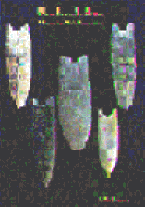

 |
The Lamb Site:
A Pioneering Clovis Encampment The Lamb Site is a new release from Dr. R.M. Gramly, published by Persimmon Press. It documents the excavations conducted in 1986 through 1990. A team of amateur archaeologists lead by Dr. Gramly excavated this interesting site which added much to our knowledge of Clovis in the Northeastern United States. Of particular interest was the material used, it came from far western New York, 500 to 800 km away! It is proposed that only one or two pioneering families who were traveling eastward and south of the Great Lakes left this material. The illustrations and photos of Clovis points and tools are impressive and illustrate some of the finest Clovis points ever found in the U.S. Artwork was done by Val Waldorf. 110 pages, color cover, perfect binding. $20. per copy |